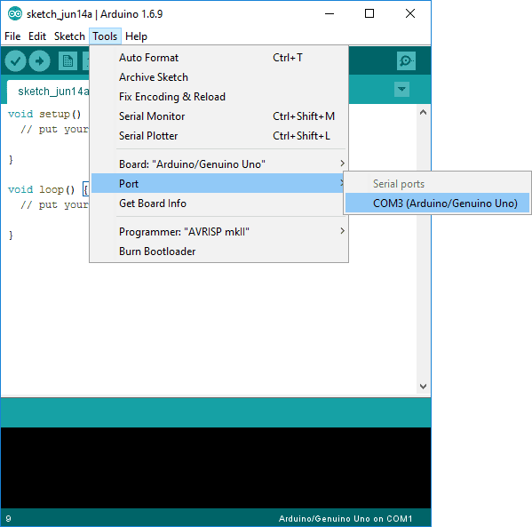

Introduksjon
Nå som vi har sett litt på hvordan vi kan kontrollere en lysdiode på forskjellige måter, kan vi gå over til å lage litt lyd!
Steg 1: Finn frem utstyr
Før vi kan begynne å lage kretsen og koden, er vi nødt til å finne frem alt vi trenger. I denne oppgaven trenger vi i hovedsak en buzzer.
Dette trenger du
- 1 Arduino Uno
- 1 breadboard
- 2 ledninger
- 1 buzzer
- 1 motstand 270 Ohm (rød-lilla-brun-gull)
Steg 2: Lag kretsen
Før vi kan begynne med programmeringen, så er vi nødt til å lage en krets. Hvis du nå har funnet frem alt du trenger kan du følge instruksjonene og illustrasjonen under.
Sjekkliste
- Ledning fra GND på Arduinoen til den negative lederen på buzzeren
- Ledning fra 11~ på Arduinoen til motstand
- Motstand til den positive lederen på buzzeren
Porter merket med ~
Husker du hva "~" betyr? Det har seg slik at alle porter merket med "~" har en spesiel funksjon kalt PWM. Dette står for "Pulse With Modulation" og kan blant annet brukes for å spille lyder.
Steg 3: Lag en tone
Nå skal vi lage vår første tone med Arduinoen.
Sjekkliste
-
Åpne Arduino-programmet om det ikke allerede er åpent.
-
Arduino-programmet starter med denne koden:
void setup(){ } void loop(){ } -
Skriv denne koden:
int lyd = 11; void setup(){ pinMode(lyd, OUTPUT); } void loop(){ tone(lyd, 880); } -
Trykk på
 for å laste opp koden. Denne sjekker først om koden
er riktig, og så vil programmet ditt kjøre på arduinoen.
for å laste opp koden. Denne sjekker først om koden
er riktig, og så vil programmet ditt kjøre på arduinoen. -
Lager den lyd?
Virker det ikke?
Hvis det ikke virker, så kan det hende at Arduino-programmet står på feil port og/eller brett. Da kan du sjekke disse to tingene:
-
Brett er satt riktig: Tools -> Board -> Arduino/Genuino Uno
-
Port er satt riktig:
- Windows: Tools -> Port -> COM1 (kan være et annet tall) 
- Mac: Tools -> Port ->/dev/tty.usbmodem262471 (kan være et annet tall)
Hvis dette ikke fungerer, kan du prøve å lukke programmet og åpne det igjen.
Utfordringer
- Hva skjer hvis du endrer tallet 880 til ett annet?
Steg 4: Bruk en lysfølsom motstand til å styre lyden
Vi kan bruke en annen input for å styre lyden også. La oss se hvordan vi kan få en lysfølsom motstand til å styre lyden. En lysfølsom motstand varierer motstanden etter hvor mye lys den får inn. Finn frem alt du trenger og koble opp slik som på diagrammet under og følg sjekklisten!
Sjekkliste
- La alle de andre komponentene være som før
- Ledning fra en fot på lysfølsom motstanden til A5 på arduinoen
- Ledning fra fot på lysfølsom motstand til GND
- Skriv koden under:
int lyd = 11;
int lys = A5;
void setup() {
pinMode(lys, INPUT_PULLUP);
pinMode(lyd, OUTPUT);
}
void loop() {
int frekvens = analogRead(lys) * 3.2;
tone(lyd, frekvens);
delay(100);
}
Se der! Nå har du lært å lage litt lyd med Arduino!
Utfordringer
Her er noen nøtter du kan prøve deg på ved å endre koden.
- Hva skjer hvis du endrer verdien til delay?
- Kan du få en lysdiode til å lyse med forskjellig intensitet gitt forskjellige toner?
- Klarer du å bruke knapper for å spille forksjellige toner?
Map
map tar en verdi, og endrer den fra ett tall i en gitt range til ett tall i en annen.
F. eks. vil
int lysstyrke = analogRead(lys);
int verdi = map(lysstyrke, 15, 512, 100, 1500);
gi verdi ett tall
mellom 15 og 512, hvor en lysstyrke på 15 gir 100 og en lysstyrke på 512 gir 1500.
Utfording (Vanskelig)
- Kan du bytte ut
analogRead(lys)*3.2til å bruke map?